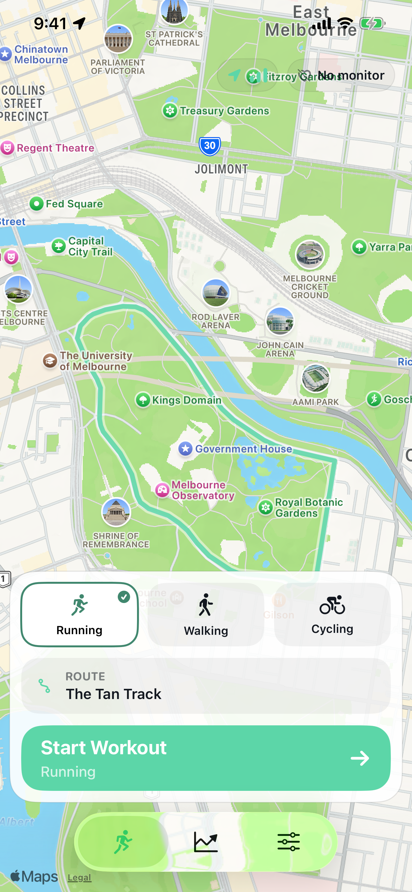

Workout metrics, routes, heart-rate samples and comparisons are held in the app on your device.
Personal training, kept personal
A private running app without a social feed
Trail IQ is for people who want their training history to help them, not become a social profile.
No Trail IQ account
Open the app and use it without creating a profile.
No social feed
No followers, public posts, clubs or leaderboards.
Local-first history
Core workout, route and health data is stored on your device.
Private by design
Train for yourself.
Trail IQ uses your personal workout and route history to make repeated routes more useful. That analysis happens within the app, without requiring a Trail IQ account or uploading your training history to Trail IQ servers.
If you are looking for a Strava alternative without social features, Trail IQ is a different kind of choice: personal route intelligence rather than community feeds and public comparison.
1
Record privately
Capture your outdoor workout without publishing it to other people.
2
Compare personally
Measure a repeated route against your own matching workouts.
3
Share deliberately
Exports, backups and support messages happen only when you initiate them.

What local-first means
Your workout history works for you on your iPhone.
Trail IQ keeps its core product experience on-device while making optional connections clear and controllable.
Your familiar-route patterns are calculated from the matching history available in Trail IQ.
You decide whether to grant Health access and whether to import or export supported workouts.
You choose when to create, restore or share a local Trail IQ backup.
No audience required
Useful fitness detail without the performance of posting.
Trail IQ focuses its screens on the workout, the route and what changed. There are no engagement counters competing with your training context.
Route
Compare your own efforts
See where you gained or lost time against an earlier workout of the same activity type.
Effort
Use relevant health context
Add heart-rate and HRV context only when compatible data was actually recorded.
Result
Get a practical next step
Review what happened on the route without likes, comments or public rankings.
Clear external connections
You remain in control when data leaves Trail IQ.
Some features interact with Apple services or destinations you choose. Trail IQ explains these separately instead of treating permission as consent to import everything.
- Apple Health permission, import and export are separate actions
- WeatherKit can add current outdoor conditions to a new workout
- Document and share sheets open only when you choose to export
- Support receives only what you decide to include in an email
- Trail IQ does not use third-party advertising or cross-app tracking

A fitness app, not a network
Your history should make your next workout better.
Compare runs on the same route, bring in supported historical workout files and use optional coaching without creating a public identity around your training.
No account requirement
No public workout profile
No social feed
No recurring subscription
Personal progress, privately understood
Keep the workout. Skip the social feed.
Trail IQ is available for iPhone with five completed workouts included. Full Access is a one-time purchase.